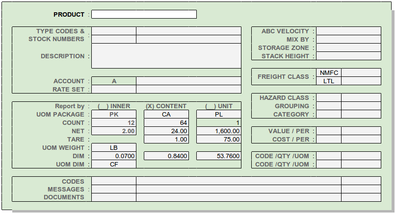

Product Masterfile Views¶
Product Setup View¶
Notes:
- Bulk products (unit UOM = BN) of non-fungible inventory track quantity by the location, fungible product inventory is tracked by the location and lot.
Product Inventory View¶

Notes:
Quantities are synthesized from locator entries as follows:
ARRIVING = ON-ORDER + IN-TRANSITON-HAND = ALL WAREHOUSE CONTENTALL-HELD = SAFETY STOCK + INSPECTION HOLD + PROCESS HOLD + DAMAGEDALLOCATED = SHIP-RESERVED + PICK-ALLOCATEDAVAILABLE = ON-HAND - ALL-HELD - ALLOCATEDShip reserve may be placed against ARRIVING stock, so AVAILABLE can be negative.Product entries link to the PRODUCT information, displayed in a lightbox. Clicking (Double-clicking?) elsewhere on a line displays LOCATOR details for that product.
Product Filters¶

Notes:
- Filter items “Building” and “Accout” accept single entries only and do not display columns. When set by login, as with account connection, these items are grayed out and not selectable.
- PRODUCT and STOCK-NUMBER filters are multi-entry and use autocomplete.
- Products without locator quantities cannot be entered in the filter or displayed.
- For a mobile interface, tuneable columns would not display by default.